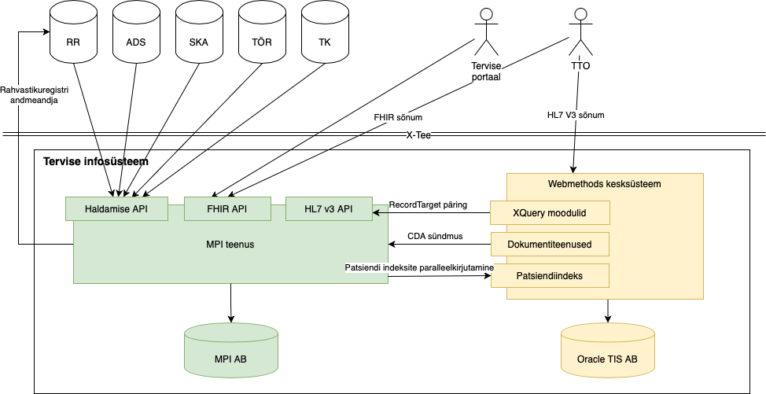

Patsientide üldandmete teenus / Master Patient Index
1.0.0 - ballot

Patsientide üldandmete teenus / Master Patient Index
1.0.0 - ballot

Patsientide üldandmete teenus / Master Patient Index - Local Development build (v1.0.0) built by the FHIR (HL7® FHIR® Standard) Build Tools. See the Directory of published versions
Antud lehekülg käsitleb HL7 FHIR ja HL7 V3/CDA (edaspidi V3) standardite kasutamist PÜT-is ja (vanas) TIS-is. FHIR PÜT ja V3 TIS vahel on mitmed erinevused: sõnumstruktuur, loendid, äriloogika.
V3 ja CDA on vanem HL7 standard mis kasutatakse TIS-is alates 2008-st aastast.
Patsiendi andmed esinevad praktiliselt igas V3 sõnumis ja CDA dokumendis tüüpiliselt patientRole elemendis. Viide viimasele dokumendile töödeldud salvestatakse Patiendiindeksis. Küsides päringuga patsiendiandmed (näiteks aegkriitilisemad andmed) TIS tagastab patsiendiandmed viimasest töödeldud sõnumist või dokumendist.
<patientRole classCode="PAT">
<id root="1.3.6.1.4.1.28284.6.2.2.1" extension="48905059995"/>
<patient classCode="PSN" determinerCode="INSTANCE">
<name>
<given>Ly</given>
<family>Cuusk</family>
</name>
<administrativeGenderCode code="N" codeSystem="1.3.6.1.4.1.28284.6.2.3.16.2" codeSystemName="Sugu" displayName="naine"/>
<birthTime value="19890505"/>
</patient>
<addr use="PHYS">
<country>EST</country>
<city>Tallinn</city>
</addr>
<telecom value="tel:+3728888888"/>
<telecom value="mailto:ly.cuusk@gmail.com"/>
</patientRole>
FHIR on uusim HL7 standard mis võetakse kasutusele upTISe raames.
Patsiendi andmed saadetakse /Patient endpointi kaudu.
PÜT tsentraliseerib patsiendi üldandmed hoidmist ühes registris.
{
"resourceType": "Patient",
"id": "pat2",
"identifier": [
{
"system": "https://fhir.ee/sid/pid/est/ni",
"value": "48905059995"
}
],
"active": true,
"name": [
{
"family": "Cuusk",
"given": [
"Ly"
]
}
],
"gender": "female",
"birthDate": "1989-05-05",
"address": [
{
"use": "work",
"city": "Tallinn",
"country": "EE"
}
]
}
PÜT-i puhul tuleb lähtuda loendist mida kirjutab ette FHIR spetsifikatsioon ja/või EEBase ja EEMPI profiilid. Näiteks, sugu kodeerimiseks kasutatakse loend AdministrativeGender. Selleks et toetada mõlemad vormingud tarkvara arendajad peavad toetama nii vana kui uut loendit.
Vastavustabel TIS sugu ja PÜT AdministrativeGender väärtuste vahel:
| Sugu (TIS) | AdministrativeGender (PÜT) |
|---|---|
| M | male |
| N | female |
| U | unknown |
| other |
V3/CDA sõnumites on kasutatud OID põhiseid identifikaatoreid. PÜT-i FHIR liides toetab ainult URI põhist identifikaatorite süsteeme. Tagasiühildavuse jaoks PÜT võimaldab pärida admed (NB! ainult pärida) kasutades OID-i koos prefiksiga urn:oid:, näiteks:
/Patient?identifier=urn:oid:1.3.6.1.4.1.28284.6.2.2.1%7C48905059995
Seoste kirjeldamiseks TIS ja upTIS (PÜT) identifikaatorite süsteemide vahel on loodud vastavustabel ConceptMap-identity-system-to-oid.
Näide: CDA dokument salvestatud TIS-i kasutades XML-is id elementi
...
<id root="1.3.6.1.4.1.28284.6.2.2.1" extension="45002280288"/>
...
Sama isiku üldandmed võib salvestada/täiendada kasutades FHIR JSON identifier elementi
...
"identifier": [
{
"system": "https://fhir.ee/sid/pid/est/ni",
"value": "45002280288"
}
]
...

PÜT koosneb mitmest kihist: andmete kiht, teenusekiht andmete kihi teenindamiseks, integratsiooni kiht, mis sisaldab mitmeid API-sid suhtlemiseks teiste osapoolte või maailmaga. FHIR API on avatud API, HL7V3 API kasutatakse uue ja vana TIS tagasiühilduvuse loomiseks, integratsioon Webmethodsi tasemel võimaldab koostöövõimet erinevate TIS moodulite vahel.
PÜT integreerituna teiste tervise infosüsteemi moodulitega tagab järjepidevuse ja tagasiühilduvuse. Integratsioon PÜT ja TIS vahel on kahesuunaline. Kasutatavad teenused:
Lahenduse disain võimaldab etappiviisilist üleminekut uuele süsteemile. Juhul kui TTO opereerib V3/CDA sõnumitega siis patsiendi andmed sünkroniseeritakse PÜT-i. Juhul kui TTO kasutab PÜT-i siis info patsiendi kohta on kättesaadav Patsiendiindeksi kaudu.